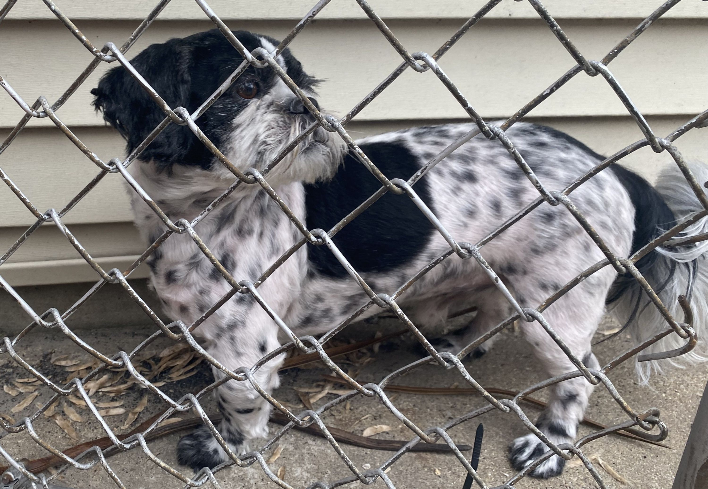
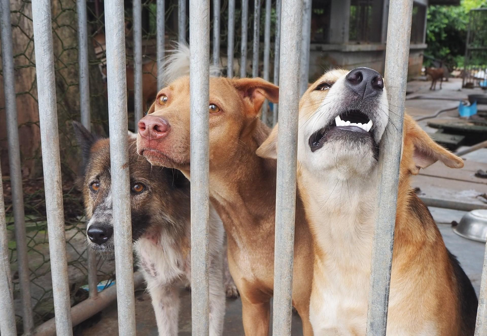

Contact Me!
Animals all over the world are being abandoned and being put into the streets causing issues for Shelters and over population and spread of disease.
Learn more..
Shelters are constantly struggling to have space available and have enough supplies to care for each pet. Most of these shelters are founded by volunteers or the owners themselves as they do not get much help.

Most of the time owners give up their dogs due to costing too much, unexpected vet bills, and too much responsibility.

Bellow are some links to donate to shelters near and Volunteering help.
Links
Bellow are some links to donate to shelters near and Volunteering help. From Volunteering to Donating to shelters in need.
Learn More..